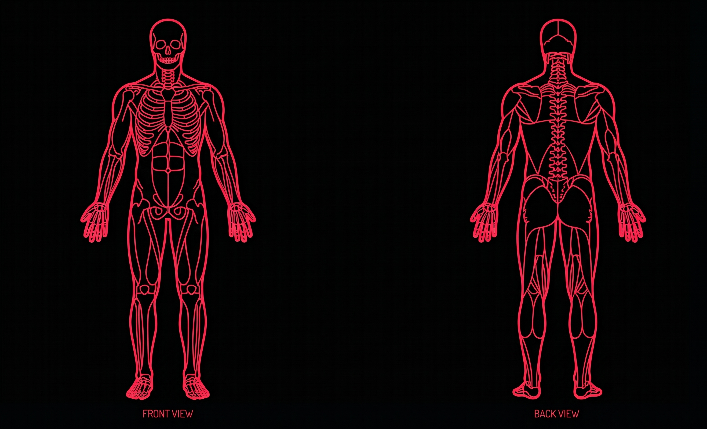
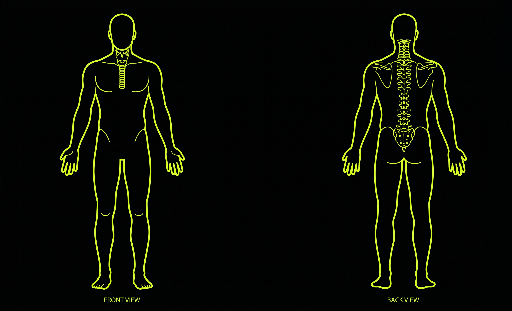
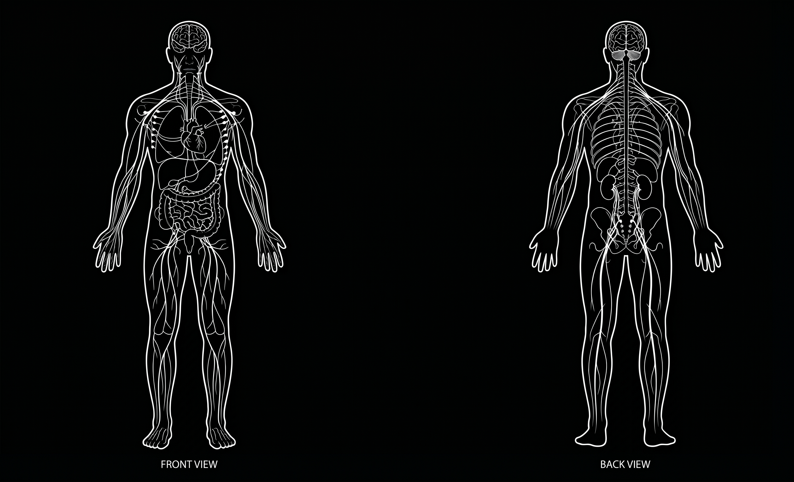

Evaluación Rúbrica 1: Enfoque en el "Aquí y Ahora" y Eje HPA
Indicador A: Registro Clínico de Marcadores Somáticos, Autonómicos y Paralingüísticos
Indicador B: Anclaje Vincular en el Presente Transferencial (El "Aquí y Ahora")
Indicador C: Activación Ejecutiva y Modulación Biológica (Disonancia Controlada)
Puntaje: -- / 9




Mapeo de Capas Anatómicas
Registra hipertonías, rigidez segmentaria y micro-movimientos de descarga motora.
Registra variaciones taquilálicas, drásticas en tono/volumen y disfluencias defensivas.
Registra alteraciones respiratorias, taquipnea, signos vasomotores y sudoración.
Registra la activación ejecutiva, modulación de amígdala y disonancia controlada efectiva.